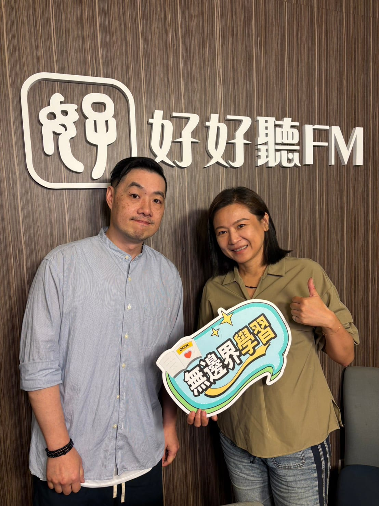

在資訊爆炸與科技快速更迭的時代，十年後的職場樣貌早已難用過往的經驗去預測。當許多今日熱門的工作在二十年前根本不存在，過去以記憶標準答案為主的教學模式，也無法完整對應孩子未來將面臨的真實世界。
社團法人 1221 未來教育發展協會長期關注孩子面對未來的教育解方。無邊界學習節目主持人江宜汾邀請位於台北市大安國中內設立、招收國中階段學生的「5IN實驗教育機構」計畫主持人李有誠，分享他們如何透過創新的體制設計，陪伴青少年建立一生受用的核心能力。

拆解「5IN」：以個體為本的整合式國際思維
談到機構名稱的由來，計畫主持人李有誠說明，這個結合數字與英文的名稱（Intelligently Integrated International Innovation Institute），完整體現了他們的教育核心：
- Intelligently（經思考的設計與數位力）：不因循守舊，重新檢視教育本質，並強調運用數位工具來成就未來的各種可能。
- Integrated（跨領域整合）：打破學科之間的藩籬，將知識與實際能力進行有機串聯。
- International（國際思維）：真正的國際化不只是護照蓋章或語言能力，而是站在他人角度理解需求、動機與痛點的同理思維。
- Innovation（創新教學與空間）：從空間設計、師生互動到教學方式全面創新，並將家庭參與高度融入其中。
- Institute（以學生為本的機構）：所有設計都以學生作為獨立個體出發，將孩子的價值觀與人格特質納入學習進程。
告別結果導向：推動「流程導向學習」
李有誠指出，5IN的課程有高達 80% 不同於傳統課綱。他們不採用傳統的內容或結果導向，而是推動「流程導向學習」。當知識能透過網路在幾秒鐘內被檢索，人類真正需要學習的是如何像個人一樣思考。
「我們人生的教育不只是教知識，而是教他們如何運用能力去解決問題。」李有誠強調，無論是生活中的挫折、工作挑戰或學術研究，面對問題的邏輯思維、最佳化做事流程，以及掌握數位工具，才是陪伴孩子一輩子的資產。
為此，機構每學期都會設定大型的真實任務。例如曾帶領學生籌辦「偏鄉兒童台北耶誕圓夢計畫」，讓孩子親自企劃、募款、尋找贊助，並帶領偏鄉孩童挑選禮物。 課程其中有兩個不同學期，一個是把偏鄉地區的孩童當作客戶，透過長期研究和交流，運用設計流程為他們設計且實際製造獨一無二只屬於他們個人的玩具，給他們不錯的聖誕節經驗。另一個學期是透過了解保護養育兒童的生活情況進而探討學生自己的信念和價值觀，之後由學生自己編寫，編排，表演為這些孩童和相關議題的聖誕節公開表演。孩子親自企劃、募款、尋找贊助，並帶領偏鄉孩童挑選禮物。在這樣的社會責任專案中，學生在實踐企劃與溝通過程裡，累積了傳統教室難以習得的實戰經驗。
打破傳統藩籬：沒有辦公室的師生陪伴
除了課程創新，5IN在師生互動上也打破常規，落實了「老師沒有辦公室」的安排。
導師與專任、客任老師整天和學生坐在同一個空間裡，時刻與孩子泡在一起。李有誠表示，成長過程中對青少年影響最深的，往往不是課堂上正經八百的授課，而是下課時發生的插曲、老師不經意的一言一行，或是當下即時的引導與討論。
「很多事情一旦過了，就沒有辦法討論了。」透過長時間的高密度相處，老師能以細微的觀察力看見學生的學習契機，雙方也能在高度信任與雙向平等的互動中，建立深厚的理解與默契，穩健地迎向充滿無限可能的人生道路。
延伸探索：社團法人 1221 未來教育發展協會官網 ↗ ｜ 《無邊界學習》主持人江宜汾個人網頁 ↗
分享這篇文章
把這場教育對話，分享給你在乎的人：FB 分享 ｜ IG ｜ Dcard ｜ LINE 分享 ｜ 抖音 ｜ 痞客邦 ｜ 文章永久連結
分享這篇文章
把這場教育對話，分享給你在乎的人。
FB 分享說明：已同步複製文章標題、摘要與連結；若 Facebook 視窗讀取較慢，可直接貼上發布。
直接開啟 Facebook 貼上分享 ↗IG 分享說明：已自動複製文章標題、摘要與連結，請開啟 Instagram 貼到限時動態、貼文或個人簡介分享。
開啟 Instagram（另開視窗） ↗Dcard 分享說明：已自動複製文章標題、摘要與連結，請開啟 Dcard 貼到看板新文章或留言分享。
開啟 Dcard（另開視窗） ↗抖音分享說明：已自動複製文章標題、摘要與連結，請開啟抖音／TikTok 貼到圖文、影片文案或個人簡介分享。
開啟抖音 / TikTok（另開視窗） ↗痞客邦分享需登入後自行發文：將標題與連結貼到新文章，再確認發布。
開啟痞客邦（另開視窗） ↗